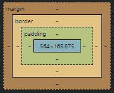
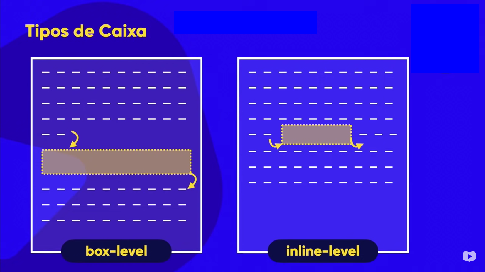
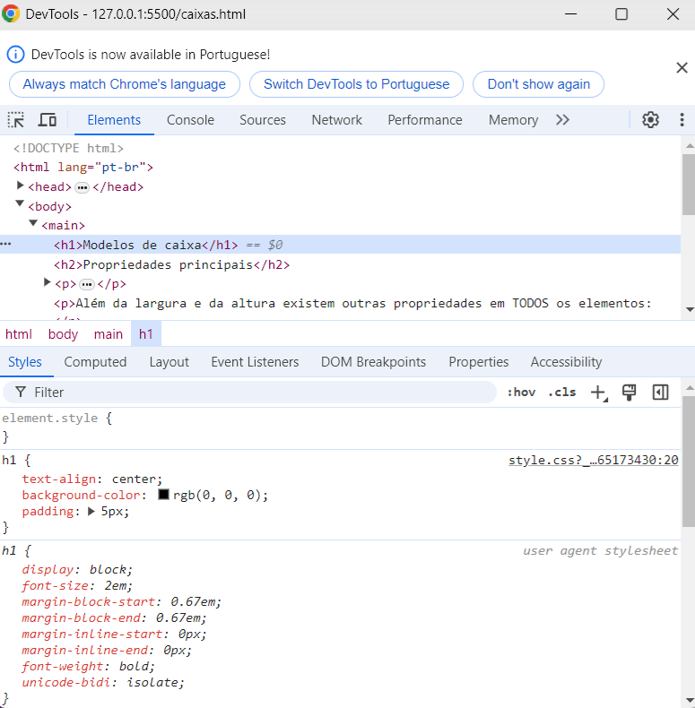
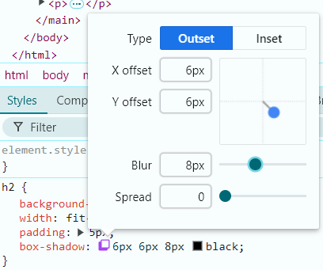

Modelos de caixa
Propriedades principais
Todos os elementos no html são exibidos em caixas, que possuem largura e altura (h1, h2, p, img, etc.).
Além da largura e da altura existem outras propriedades em TODOS os elementos:
- width = largura
- height = altura
- padding = a distância entre o conteúdo e a borda
- border = borda que circunda o texto
- margin = a distância entre o elemento e elementos externos/fim da página
- outline = um traçado que fica fora do elemento, logo após a borda
Tipos de caixa
Box level: o box level é um tipo de caixa que ocupa sempre a linha inteira. Sempre se iniciará um novo parágrafo (pular linha) antes e depois da caixa.
Inline level: as caixas inline não ocupam a linha inteira, o conteúdo para, a caixa é inserida ocupando apenas o espaço do seu conteúdo, e na mesma linha, se dá continuidade ao conteúdo.
Devtools
O Devtools é uma ferramenta presente no google chrome, que permite que você visualize as confugrações HTML e CSS da página. Para acessar essa ferramenta, utilize o comando ctrl + shift + i.
Nele você pode editar configurações de estilo, que alterarão a visualização da página, mas não interferindo no documento CSS original. O que é ideal para testes.
Estilos nas caixas
Sombras
Para se utilizar sombras, utiliza-se o estilo box-shadow, que recebe respecitvamente cinco valores separados por espaços em sua shorthand: Posição (inset - outset) deslocamento horizontal deslocamento vertical espalhamento cor da sombra.
Uma dica valiosa para personalizar a sombra é utilizar o dev-tools, nele você pode utilizar o scrool do mouse para modificaro os valores da sombra, ou utilizar uma janela personalizada para criar sombras:
Procure usar transparência nas sombras.
Cantos arredondados
Para arredondar os cantos de uma caixa, utiliza-se o estilo border-radius, que recebe 4 parâmetros, cada um referente a um dos 4 cantos da caixa, apresentando valores em px.
Comumumente usa-se o shorthand desse estilo, porém ele pode ser dividido em 4.
- border-top-left-radius: ;
- border-top-right-radius: ;
- border-bottom-left-radius: ;
- border-bottom-right-radius: ;